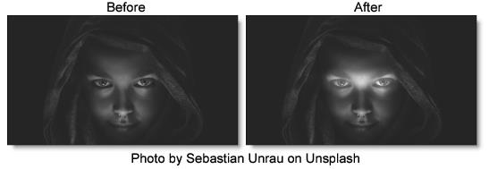

Eye Light
Description
Creates a targeted light to be placed around a person's eyes.
Category
Light.
Controls
Light
Blend
Determines the blend mode to be used to add the light.
Add
The light is added to your image.
Screen
The light is combined with the image using a Screen blend mode. This looks kind of like the Add blend mode, but highlights are retained.
Brightness
Sets the intensity of the light.
Blur
Sets the softness of the light.
Gels
Photographers, cinematographers and lighting designers use colored filters or gels in front of lights. Whatever mood you wish to create, we have the colors needed to achieve the effect. Select one of the Gels presets from the pop-up menu.
Color
Sets the color of the light through the use of a standard color picker.
Shadow
Brightness
Sets the intensity of the shadows. The Brightness parameter will darken only those areas that are not being brightened by the Light settings.
Transform
Transform the eye light pattern using Scale and Rotate controls. Go to the
Transform section of Common Filter Controls to see how the Transform Controls work.